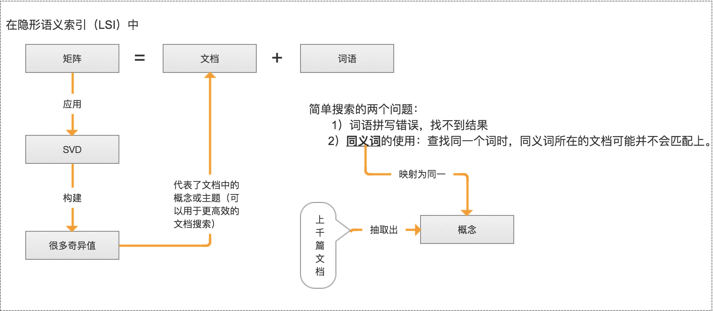
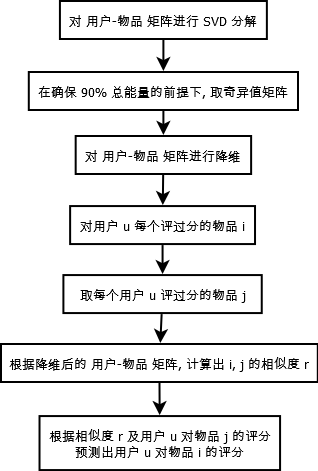

第14章 利用SVD简化数据¶
SVD 概述¶
奇异值分解（SVD, Singular Value Decomposition）:
提取信息的一种方法，可以把 SVD 看成是从噪声数据中抽取相关特征。从生物信息学到金融学，SVD 是提取信息的强大工具。
SVD 场景¶
信息检索-隐性语义检索（Lstent Semantic Indexing, LSI）或 隐形语义分析（Latent Semantic Analysis, LSA）
隐性语义索引：矩阵 = 文档 + 词语 * 是最早的 SVD 应用之一，我们称利用 SVD 的方法为隐性语义索引（LSI）或隐性语义分析（LSA）。

推荐系统
- 利用 SVD 从数据中构建一个主题空间。
- 再在该空间下计算其相似度。(从高维-低维空间的转化，在低维空间来计算相似度，SVD 提升了推荐系统的效率。)

- 上图右边标注的为一组共同特征，表示美式 BBQ 空间；另一组在上图右边未标注的为日式食品 空间。
图像压缩
例如：32*32=1024 => 32*2+2*1+32*2=130(2*1表示去掉了除对角线的0), 几乎获得了10倍的压缩比。

SVD 原理¶
SVD 工作原理¶
矩阵分解
- 矩阵分解是将数据矩阵分解为多个独立部分的过程。
- 矩阵分解可以将原始矩阵表示成新的易于处理的形式，这种新形式是两个或多个矩阵的乘积。（类似代数中的因数分解）
- 举例：如何将12分解成两个数的乘积？（1，12）、（2，6）、（3，4）都是合理的答案。
SVD 是矩阵分解的一种类型，也是矩阵分解最常见的技术
- SVD 将原始的数据集矩阵 Data 分解成三个矩阵 U、∑、V
- 举例：如果原始矩阵 \(Data_{m*n}\) 是m行n列，
- \(U_{m*n}\) 表示m行n列
- \(∑_{m*k}\) 表示m行k列
- \(V_{k*n}\) 表示k行n列。
\(Data_{m*n} = U_{m*k} * ∑{k*k} * V{k*n}\)
具体的案例：（大家可以试着推导一下：https://wenku.baidu.com/view/b7641217866fb84ae45c8d17.html ）

- 上述分解中会构建出一个矩阵∑，该矩阵只有对角元素，其他元素均为0(近似于0)。另一个惯例就是，∑的对角元素是从大到小排列的。这些对角元素称为奇异值。
- 奇异值与特征值(PCA 数据中重要特征)是有关系的。这里的奇异值就是矩阵 \(Data * Data^T\) 特征值的平方根。
- 普遍的事实：在某个奇异值的数目(r 个=>奇异值的平方和累加到总值的90%以上)之后，其他的奇异值都置为0(近似于0)。这意味着数据集中仅有 r 个重要特征，而其余特征则都是噪声或冗余特征。
SVD 算法特点¶
优点：简化数据，去除噪声，优化算法的结果 缺点：数据的转换可能难以理解 使用的数据类型：数值型数据
推荐系统¶
推荐系统 概述¶
推荐系统是利用电子商务网站向客户提供商品信息和建议，帮助用户决定应该购买什么产品，模拟销售人员帮助客户完成购买过程。
推荐系统 场景¶
- Amazon 会根据顾客的购买历史向他们推荐物品
- Netflix 会向其用户推荐电影
- 新闻网站会对用户推荐新闻频道
推荐系统 要点¶
基于协同过滤(collaborative filtering) 的推荐引擎
- 利用Python 实现 SVD(Numpy 有一个称为 linalg 的线性代数工具箱)
- 协同过滤：是通过将用户和其他用户的数据进行对比来实现推荐的。
- 当知道了两个用户或两个物品之间的相似度，我们就可以利用已有的数据来预测未知用户的喜好。
基于物品的相似度和基于用户的相似度：物品比较少则选择物品相似度，用户比较少则选择用户相似度。【矩阵还是小一点好计算】
- 基于物品的相似度：计算物品之间的距离。【耗时会随物品数量的增加而增加】
- 由于物品A和物品C 相似度(相关度)很高，所以给买A的人推荐C。

- 基于用户的相似度：计算用户之间的距离。【耗时会随用户数量的增加而增加】
- 由于用户A和用户C 相似度(相关度)很高，所以A和C是兴趣相投的人，对于C买的物品就会推荐给A。
相似度计算
- inA, inB 对应的是 列向量
- 欧氏距离：指在m维空间中两个点之间的真实距离，或者向量的自然长度（即该点到原点的距离）。二维或三维中的欧氏距离就是两点之间的实际距离。
- 相似度= 1/(1+欧式距离)
相似度= 1.0/(1.0 + la.norm(inA - inB))- 物品对越相似，它们的相似度值就越大。
- 皮尔逊相关系数：度量的是两个向量之间的相似度。
- 相似度= 0.5 + 0.5*corrcoef() 【皮尔逊相关系数的取值范围从 -1 到 +1，通过函数0.5 + 0.5*corrcoef()这个函数计算，把值归一化到0到1之间】
相似度= 0.5 + 0.5 * corrcoef(inA, inB, rowvar = 0)[0][1]- 相对欧氏距离的优势：它对用户评级的量级并不敏感。
- 余弦相似度：计算的是两个向量夹角的余弦值。
- 余弦值 = (A·B)/(||A||·||B||) 【余弦值的取值范围也在-1到+1之间】
- 相似度= 0.5 + 0.5*余弦值
相似度= 0.5 + 0.5*( float(inA.T*inB) / la.norm(inA)*la.norm(inB))- 如果夹角为90度，则相似度为0；如果两个向量的方向相同，则相似度为1.0。
推荐系统的评价
- 采用交叉测试的方法。【拆分数据为训练集和测试集】
- 推荐引擎评价的指标： 最小均方根误差(Root mean squared error, RMSE)，也称标准误差(Standard error)，就是计算均方误差的平均值然后取其平方根。
- 如果RMSE=1, 表示相差1个星级；如果RMSE=2.5, 表示相差2.5个星级。
推荐系统 原理¶
- 推荐系统的工作过程：给定一个用户，系统会为此用户返回N个最好的推荐菜。
- 实现流程大致如下：
- 寻找用户没有评级的菜肴，即在用户-物品矩阵中的0值。
- 在用户没有评级的所有物品中，对每个物品预计一个可能的评级分数。这就是说：我们认为用户可能会对物品的打分（这就是相似度计算的初衷）。
- 对这些物品的评分从高到低进行排序，返回前N个物品。
项目案例: 餐馆菜肴推荐系统¶
项目概述¶
假如一个人在家决定外出吃饭，但是他并不知道该到哪儿去吃饭，该点什么菜。推荐系统可以帮他做到这两点。
开发流程¶
收集 并 准备数据
def loadExData3(): # 利用SVD提高推荐效果，菜肴矩阵 """ 行：代表人 列：代表菜肴名词 值：代表人对菜肴的评分，0表示未评分 """ return[[2, 0, 0, 4, 4, 0, 0, 0, 0, 0, 0], [0, 0, 0, 0, 0, 0, 0, 0, 0, 0, 5], [0, 0, 0, 0, 0, 0, 0, 1, 0, 4, 0], [3, 3, 4, 0, 3, 0, 0, 2, 2, 0, 0], [5, 5, 5, 0, 0, 0, 0, 0, 0, 0, 0], [0, 0, 0, 0, 0, 0, 5, 0, 0, 5, 0], [4, 0, 4, 0, 0, 0, 0, 0, 0, 0, 5], [0, 0, 0, 0, 0, 4, 0, 0, 0, 0, 4], [0, 0, 0, 0, 0, 0, 5, 0, 0, 5, 0], [0, 0, 0, 3, 0, 0, 0, 0, 4, 5, 0], [1, 1, 2, 1, 1, 2, 1, 0, 4, 5, 0]]
分析数据: 这里不做过多的讨论(当然此处可以对比不同距离之间的差别)
训练算法: 通过调用 recommend() 函数进行推荐
recommend() 会调用 基于物品相似度 或者是 基于SVD，得到推荐的物品评分。
- 1.基于物品相似度


# 基于物品相似度的推荐引擎 def standEst(dataMat, user, simMeas, item): """standEst(计算某用户未评分物品中，以对该物品和其他物品评分的用户的物品相似度，然后进行综合评分) Args: dataMat 训练数据集 user 用户编号 simMeas 相似度计算方法 item 未评分的物品编号 Returns: ratSimTotal/simTotal 评分（0～5之间的值） """ # 得到数据集中的物品数目 n = shape(dataMat)[1] # 初始化两个评分值 simTotal = 0.0 ratSimTotal = 0.0 # 遍历行中的每个物品（对用户评过分的物品进行遍历，并将它与其他物品进行比较） for j in range(n): userRating = dataMat[user, j] # 如果某个物品的评分值为0，则跳过这个物品 if userRating == 0: continue # 寻找两个用户都评级的物品 # 变量 overLap 给出的是两个物品当中已经被评分的那个元素的索引ID # logical_and 计算x1和x2元素的真值。 overLap = nonzero(logical_and(dataMat[:, item].A > 0, dataMat[:, j].A > 0))[0] # 如果相似度为0，则两着没有任何重合元素，终止本次循环 if len(overLap) == 0: similarity = 0 # 如果存在重合的物品，则基于这些重合物重新计算相似度。 else: similarity = simMeas(dataMat[overLap, item], dataMat[overLap, j]) # print 'the %d and %d similarity is : %f'(iten,j,similarity) # 相似度会不断累加，每次计算时还考虑相似度和当前用户评分的乘积 # similarity 用户相似度， userRating 用户评分 simTotal += similarity ratSimTotal += similarity * userRating if simTotal == 0: return 0 # 通过除以所有的评分总和，对上述相似度评分的乘积进行归一化，使得最后评分在0~5之间，这些评分用来对预测值进行排序 else: return ratSimTotal/simTotal
- 2.基于SVD(参考地址：http://www.codeweblog.com/svd-%E7%AC%94%E8%AE%B0/)

# 基于SVD的评分估计 # 在recommend() 中，这个函数用于替换对standEst()的调用，该函数对给定用户给定物品构建了一个评分估计值 def svdEst(dataMat, user, simMeas, item): """svdEst(计算某用户未评分物品中，以对该物品和其他物品评分的用户的物品相似度，然后进行综合评分) Args: dataMat 训练数据集 user 用户编号 simMeas 相似度计算方法 item 未评分的物品编号 Returns: ratSimTotal/simTotal 评分（0～5之间的值） """ # 物品数目 n = shape(dataMat)[1] # 对数据集进行SVD分解 simTotal = 0.0 ratSimTotal = 0.0 # 奇异值分解 # 在SVD分解之后，我们只利用包含了90%能量值的奇异值，这些奇异值会以NumPy数组的形式得以保存 U, Sigma, VT = la.svd(dataMat) # # 分析 Sigma 的长度取值 # analyse_data(Sigma, 20) # 如果要进行矩阵运算，就必须要用这些奇异值构建出一个对角矩阵 Sig4 = mat(eye(4) * Sigma[: 4]) # 利用U矩阵将物品转换到低维空间中，构建转换后的物品(物品+4个主要的特征) xformedItems = dataMat.T * U[:, :4] * Sig4.I # 对于给定的用户，for循环在用户对应行的元素上进行遍历， # 这和standEst()函数中的for循环的目的一样，只不过这里的相似度计算时在低维空间下进行的。 for j in range(n): userRating = dataMat[user, j] if userRating == 0 or j == item: continue # 相似度的计算方法也会作为一个参数传递给该函数 similarity = simMeas(xformedItems[item, :].T, xformedItems[j, :].T) # for 循环中加入了一条print语句，以便了解相似度计算的进展情况。如果觉得累赘，可以去掉 print 'the %d and %d similarity is: %f' % (item, j, similarity) # 对相似度不断累加求和 simTotal += similarity # 对相似度及对应评分值的乘积求和 ratSimTotal += similarity * userRating if simTotal == 0: return 0 else: # 计算估计评分 return ratSimTotal/simTotal
排序获取最后的推荐结果
# recommend()函数，就是推荐引擎，它默认调用standEst()函数，产生了最高的N个推荐结果。 # 如果不指定N的大小，则默认值为3。该函数另外的参数还包括相似度计算方法和估计方法 def recommend(dataMat, user, N=3, simMeas=cosSim, estMethod=standEst): # 寻找未评级的物品 # 对给定的用户建立一个未评分的物品列表 unratedItems = nonzero(dataMat[user, :].A == 0)[1] # 如果不存在未评分物品，那么就退出函数 if len(unratedItems) == 0: return 'you rated everything' # 物品的编号和评分值 itemScores = [] # 在未评分物品上进行循环 for item in unratedItems: estimatedScore = estMethod(dataMat, user, simMeas, item) # 寻找前N个未评级物品，调用standEst()来产生该物品的预测得分，该物品的编号和估计值会放在一个元素列表itemScores中 itemScores.append((item, estimatedScore)) # 按照估计得分，对该列表进行排序并返回。列表逆排序，第一个值就是最大值 return sorted(itemScores, key=lambda jj: jj[1], reverse=True)[: N]
测试 和 项目调用，可直接参考我们的代码
完整代码地址: https://github.com/apachecn/MachineLearning/blob/master/src/python/14.SVD/svdRecommend.py
要点补充¶
基于内容(content-based)的推荐
- 通过各种标签来标记菜肴
- 将这些属性作为相似度计算所需要的数据
- 这就是：基于内容的推荐。
构建推荐引擎面临的挑战
问题 * 1）在大规模的数据集上，SVD分解会降低程序的速度 * 2）存在其他很多规模扩展性的挑战性问题，比如矩阵的表示方法和计算相似度得分消耗资源。 * 3）如何在缺乏数据时给出好的推荐-称为冷启动【简单说：用户不会喜欢一个无效的物品，而用户不喜欢的物品又无效】
建议
* 1）在大型系统中，SVD分解(可以在程序调入时运行一次)每天运行一次或者其频率更低，并且还要离线运行。
* 2）在实际中，另一个普遍的做法就是离线计算并保存相似度得分。(物品相似度可能被用户重复的调用)
* 3）冷启动问题，解决方案就是将推荐看成是搜索问题，通过各种标签／属性特征进行基于内容的推荐。
项目案例: 基于 SVD 的图像压缩¶
收集 并 准备数据
将文本数据转化为矩阵
# 加载并转换数据 def imgLoadData(filename): myl = [] # 打开文本文件，并从文件以数组方式读入字符 for line in open(filename).readlines(): newRow = [] for i in range(32): newRow.append(int(line[i])) myl.append(newRow) # 矩阵调入后，就可以在屏幕上输出该矩阵 myMat = mat(myl) return myMat
分析数据: 分析 Sigma 的长度个数
通常保留矩阵 80% ～ 90% 的能量，就可以得到重要的特征并去除噪声。
def analyse_data(Sigma, loopNum=20): """analyse_data(分析 Sigma 的长度取值) Args: Sigma Sigma的值 loopNum 循环次数 """ # 总方差的集合（总能量值） Sig2 = Sigma**2 SigmaSum = sum(Sig2) for i in range(loopNum): SigmaI = sum(Sig2[:i+1]) ''' 根据自己的业务情况，就行处理，设置对应的 Singma 次数 通常保留矩阵 80% ～ 90% 的能量，就可以得到重要的特征并取出噪声。 ''' print '主成分：%s, 方差占比：%s%%' % (format(i+1, '2.0f'), format(SigmaI/SigmaSum*100, '4.2f'))
使用算法: 对比使用 SVD 前后的数据差异对比，对于存储大家可以试着写写
例如：32*32=1024 => 32*2+2*1+32*2=130(2*1表示去掉了除对角线的0), 几乎获得了10倍的压缩比。
# 打印矩阵 def printMat(inMat, thresh=0.8): # 由于矩阵保护了浮点数，因此定义浅色和深色，遍历所有矩阵元素，当元素大于阀值时打印1，否则打印0 for i in range(32): for k in range(32): if float(inMat[i, k]) > thresh: print 1, else: print 0, print '' # 实现图像压缩，允许基于任意给定的奇异值数目来重构图像 def imgCompress(numSV=3, thresh=0.8): """imgCompress( ) Args: numSV Sigma长度 thresh 判断的阈值 """ # 构建一个列表 myMat = imgLoadData('input/14.SVD/0_5.txt') print "****original matrix****" # 对原始图像进行SVD分解并重构图像e printMat(myMat, thresh) # 通过Sigma 重新构成SigRecom来实现 # Sigma是一个对角矩阵，因此需要建立一个全0矩阵，然后将前面的那些奇异值填充到对角线上。 U, Sigma, VT = la.svd(myMat) # SigRecon = mat(zeros((numSV, numSV))) # for k in range(numSV): # SigRecon[k, k] = Sigma[k] # 分析插入的 Sigma 长度 analyse_data(Sigma, 20) SigRecon = mat(eye(numSV) * Sigma[: numSV]) reconMat = U[:, :numSV] * SigRecon * VT[:numSV, :] print "****reconstructed matrix using %d singular values *****" % numSV printMat(reconMat, thresh)
完整代码地址: https://github.com/apachecn/MachineLearning/blob/master/src/python/14.SVD/svdRecommend.py
- 作者：片刻 1988
- GitHub地址: https://github.com/apachecn/MachineLearning
- 版权声明：欢迎转载学习 => 请标注信息来源于 ApacheCN